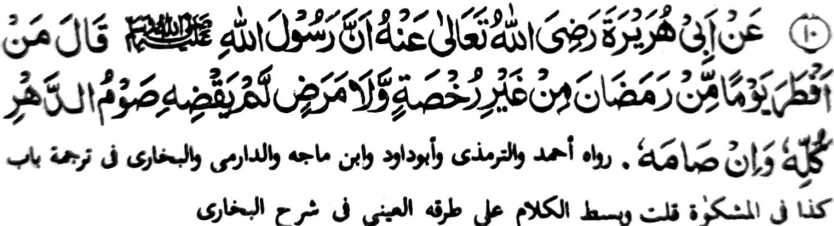

Hadith 10

Miyakathitayan ko Abu Hurairah (Radhiallaho ‘Anho) a mata-an a so Rasulollah (Sallallaho ‘Alaihi Wasallam) na miyatharo iyan, “Sa tao a thibaba koman ko kadaondao ko Ramadhan a kena ba sabap ko piyakay [o kokoman o Shari'ah] o di na kasasakit, na di niyan den katapalan apiya phowasa-an niyan ko tenday o kaoya-goyag iyan.”
OSAYAN
Aya kepit o saba-ad ko manga Ulama na opama ka aden a tao a da a odyor iyan na da niyan kaphowasa-i so salongan bo ko Ramadhan go da niyan pagadati [angkoto a gawi-i] sabap ko kiyakan niyan, o di na manga ped a [phakabatal], na di niyan den noto katapalan apiya phowasa-an niyan so lamba ko kaoya-goyag iyan. So Hazrat ‘Ali (Radhiallaho Anho) na lagida-i a kepit iyan. Ogaid, na kadakelan ko manga Ulama na aya kepit iran na opama ka so tao na di makaphowasa sa salongan ko Ramadhan na khabayadan niyan a salongan a powasa [ko salakao ko Ramadhan]. Isa pen, na opama ka so tao na miyakapho-on phowasa ko Ramadhan na pithibaba iyan a kiyaboka niyan ko kadaondao ko Ramadhan a da a mala a khapakay a sabap, na si-i ko kokoman non o Shari’ah, na makapephowasa sekaniyan sa nem polo gawi-i a makathotondo-tondog a aden a Iftar ago ‘Sehri niyan. Ogaid na so tarotop a kalbihan ago balas o Ramadhan na di den khaparoli. Giya-i ma-ana angkanan a Hadith a miya-aloy, ma-ana so salongan ko Ramadhan a miyada a da a mala a khapakay a sabap, na da a kadakel a gawi-i a phamowasa-an a imbayad on a ba iran mikasoy so titho a balas angkoto a salongan ko Ramadhan.
Giya-i langon na makapantag ko siran a pephamayad sa powasa. Tanto a kiyada-an sa ontong ago miyadadag so siran a tarotop den a kinibagaken niran ko powasa a di ran ipenggolalan ko tenday o Ramadhan o di na si-i ko oriyan o Ramadhan a antap sa kabayad. So powasa na isa ko manga rokon [pola-os] o Islam, go so Rasulollah (Sallallaho ‘Alaihi Wasallam) na miya-aloy niyan so lima a manga pola-os. Pagam-paganay ago aya piphaporo-an na so kaisa-isa o Allah (Subhaanaho Wa Ta’ala) go so kananabi-i ko Muhammad (Sallallaho Alaihi Wasallam); na oriyan noto na so pat a lamba a manga pola-os ma-ana. Sambayang, Powasa, Zakat, ago so Hajj. Kadakelan ko manga Muslim a mi-iitong siran ko manga Muslim, ogaid na di ran iphamayandeg so apiya so isa kiran bo a pola-os. Si-i ko manga pangitaban o parinta ago so itongan o kadakela tao [census], na mi-iitong siran a Muslim, ogaid na si-i ko itongan o Allah (Subhaanaho Wa Ta’ala) na maregen a kikhi-itong iran sa Muslim. So Ibn Abbas (Radhiallaho ‘Anho) na miya-aloy niyan a Hadith a pitharo iyan, “So Islam na makaphapasod ko telo a rokon - (1) So paratiyaya, (2) so Sambayang, (3) so Powasa. Saden sa mibagak iyan so isa si-i na kapir sekaniyan na miyapatot rekaniyan so siksa a malipedes. So peman so oriyan angkanan a Hadith na so manga Ulama na miyatharo iran a aya kapembaloy iran a kapir na opama ka kena ba giyabo a kinibagaken niran ko apiya antona-a kiran [a manga rokon] ka tiyangked iyan pen a di paliyogaten. Apiya antona-a den-i ipema-ana on, na aya mata-an na tomatana a so Rasulollah (Sallallaho ‘Alaihi Wasallam) na piyakasakitan niyan siran sa katharo, go so siran a inibagak iyan so manga faralo ko Agama na aya tomo na kaleken niran sa titho so rarangit o Allah (Subhaanaho Wa Ta’ala). So kapipiya ginawa na maito na so kapatay na mata-an a khawit iyan siran sa hadapan o Allah (Subhaanaho Wa Ta’ala), a ro-o na da den a phakalidas son ago da rowar ko kapangongonotan Rekaniyan sangka-iya donya-i phakatabang reketano. Aden ko siran a da a sabot iyan a di pephowasa, ogaid na lebi a marata so betad o siran a kena ba giyabo a di ran kapephowasa ka phagogiyaban niran [so manga barapowasa] si-i sangka-iya a olan-olan a powasa, ma-ana gi-i ran tharo-on sa ropa a kasodi angka-i: “Phowasa so siran a da a pangenengken ko walay niyan”, o di na “Antona-ai khakowa o Allah (Subhaanaho Wa Ta’ala) a kamapiya-an sa gi-i Niyan reketano kapakapagongosa?” Giyangkanan a manga katharo na oba mibenga sa modol, sa tatademi a so kandawa-daway ago so kaogiyabi, o di na apiya so kapama-awinga ko pithamanan a maito a sapak o Agama na ikhada o tao ko Agama [mortad], O da den a isa bo ka raka’at a Sambayang a kiyazambayangan o tao ko tenday o kaoya-goyag iyan, o di na da a salongan bo a kiyaphowasa-an niyan, o di na da den a mininggolalan niyan ko manga paliyogat o Islam, na kena ba niyan ikhakapir, asar ka di niyan sangka-an a kababaloy ran a paliyogat. So omani faralo a minggolalan na mbalasan na so omani faralo a mibagak na iziksa. Ogaid na so kadawaya ago kaogiyabi ko pithamanan a maito a sapak o Agama na ikhakapir [mortad] sa khasabapan sa ka-antiyor o langon o mapiya Amaal. Sabap si-i, na mipephagarangan so tanto a kiyabaloy a pakaleklek o lagid anan a kaphapa-awing; sa giyoto-i sabap a pananggila-an tano so apiya antona-a marata a katharo pantag ko kaphowasa. Apiya giyoto den, na sa tao a di makaphowasa ko Ramadhan a da a mala a khapakay a sabap na ipembaloy o tao a malawani (Faasiq). Saba-ad ko manga Fuqahaa na ini-oman niran non pen sa kiyatharo-a iran sa sa tao a koman sa marayag ko olan-olan a Ramadhan a da a khapakay a sabap, na patot den so kabono-a on, ogaid na apiya si-i ko di pen kapakatitindeg o parinta a Islam a mipami-is iyan angka-iya kokoman (go mitapelek iyan angka-iya ola-ola), na da a phakasapar reketano sa kapetharo-a tano ko di tano kasoso-at, ago rata a ginawa go kagowad ko siran a manga malawani. Giyanan-i pithamanan a khisogo reketano o paratiyaya tano ago aya miyakaloba-lobay a paratiyaya na so katago-a ko poso ko kagowad sangkoto a manga ola-ola. Sabap ko tanto tano a kinibolog, na miyapikir aken a kiyatangka-an den angka-iya sapolo a Hadith sangka-iya a paganay a pinto a bagi-an o siran a kabaya iran a kinggolalanen niyan non phiya-piya. So peman so siran a di ran manini-at so kapagonoti ran non, na da a kala iyan a dapetar a makanggay kiran a gona. Began ako o Allah (Subhaanaho Wa Ta’ala) ago so manga Muslim sa bager a kanggola-ola mi ko manga pipiya Amaal, sabap sa aden a di tano kapakatatarotop. 'Ameen'